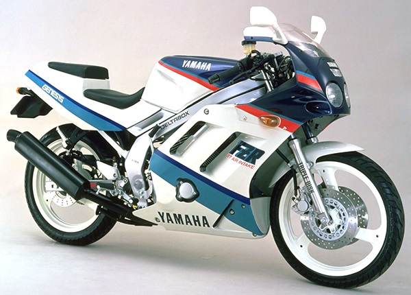
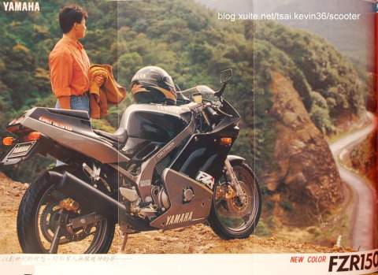
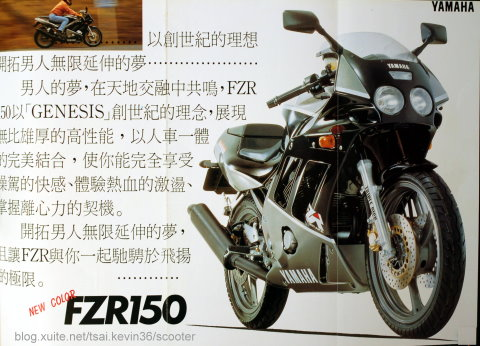

山葉FZR150-台灣第一款V型雙汽缸摩托車
山葉FZR150-簡介

山葉FZR150為台灣山葉機車生產第一款具備了V型雙汽缸的摩托車，採用了17吋前後輪框，
直徑33毫米前正雙叉減震器及中置多連桿式後減震器，245毫米雙碟式前煞車盤及210毫米直徑後碟式煞車盤，
為台灣在20世紀最後生產的一款仿賽車風格摩托車，1990年最早引擎生產型號為3KW-0，1998年最終引擎生產型號為3KW-5。
FZR150可謂是空前，也可能是絕後的，國產唯一雙缸仿賽，
在競速時代誕生的它，比起追風、王牌、NSR等車種，在速度上確實遠遠不如，
但是，它卻仍然令人著迷，
因為在當年重車無開放的年代，它可以說是最接近重機的車了。
山葉FZR150-歷史

1989年台灣山葉機車依靠國外量產的山葉XV250/125 Virago引擎原型為藍本的V型雙缸引擎，
（此款引擎於1987年重新設計完成，改善了1983年SRV250引擎平衡問題），
再加上重新設計的密齒比六檔變速箱及高扭力的一次減速比，
外型方面初期以日本FZR250（型號2KR）的外型作為參考基礎，從而打造出一台十分相像的小型化仿賽車。
FZR150採用了前雙碟式煞車，後單碟式煞車，V型雙缸、中置多連桿避震器系統，加上重達 144 公斤的重量，
使得車輛在彎路行駛及高速行駛時的穩定性超過當時市面上任何一款打檔摩托車。
第一代的FZR150大燈為雙圓燈初期並無機油冷卻器，在後期有加裝機油冷卻器。
第二代FZR150應該是參考日本FZR250R（型號3LN）的頭燈造型，
並加裝機油冷卻器及AIS空氣補償導入系統。本車款於1998年停產。
山葉FZR150-詳細規格

- 全長：1,960 毫米
- 全寬：680 毫米
- 全高：1,060 毫米
- 座高：745 毫米
- 軸間距離：1,345 毫米
- 最低地上高：140 毫米
- 基本濕重：144 公斤
- 最小回轉半徑：2800 毫米
- 引擎開始打刻號碼：3KW-000101
- 引擎型式：單頂上凸輪,四行程氣冷式引擎
- 汽缸排列：V型,二汽缸
- 總排氣量：149cm3
- 缸徑X行程：45X47 毫米
- 最大馬力：17.4ps/11000rpm
- 最大扭力：1.22kgm/8500rpm
- 壓縮比：10.7：1
- 壓縮壓力：10 公斤/cm2/300r.p.m
- 起動方式：電動/腳踩(選配)
- 油箱容量：10L (預備油1.9L)
- 化油器型式/廠牌/數量：BDS26/MIKUNI/1
- 火星塞型式/廠牌/數量：C7HSA/NGK/2
- 傳動機構
- 一次減速比：85/25(3.4)
- 二次減速比：50/13(3.85)
- 變速箱型式：六段常嚙合齒輪式
- 二檔齒輪比：38/21(1.810)
- 三檔齒輪比：33/24(1.375)
- 四檔齒輪比：30/27(1.111)
- 五檔齒輪比：28/30(0.933)
- 六檔齒輪比：26/32(0.813)
- 化油器油嘴號數：主噴油口 #97.5 油針：前缸後缸相同4DLV8-3
- 車架型式：方管鐵質鑽石型車架
- 傾斜度：25.5°
- 導距: 89mm
- 輪框及輪胎：
- 前輪 17"X2.15" 90/80-17 46S
- 後輪 17"X2.5" 110/80-17 57S
- 前煞車系統
- 前總泵廠牌及規格：NISSIN 14 毫米
- 前煞車卡鉗規格及數目：NISSIN 對向二活塞 /2
- 前煞車碟規格及數目：直徑245 毫米 厚度4 毫米 大六孔雙碟盤 /2
- 前避震器規格以及數目即行程：33 毫米油壓筒式前減震器 /2/140毫米
- 後煞車系統
- 後總泵廠牌及規格：NISSIN 14 毫米
- 後煞車卡鉗規格及數目：NISSIN 對向二活塞 /1
- 後煞車碟規格及數目：直徑 210 毫米 厚度 5 毫米 三孔單碟盤 /1
- 後減震器規格及數目：MONO CROSS多連桿式單槍 /1
- 點火系統規格及廠牌：C.D.I.（電容放電）引擎轉速限制12700r.p.m. /台灣TIIC
- 點火正時： 4°(1500r/min) 35°(4000r/min)
- 大燈規格：仿FZR250雙圓燈 小盤 30/30W X 2
- 小燈規格:T10 12V 5W X 1
- 儀表照明燈:T10 12V 1.7W X3 T5 12V 1.7W X1
- 空檔指示燈:T10 12V 3.4W X1
- 方向指示燈:T10 12V 3.4W X1
- 遠光指示燈:T10 12V 3.4W X1
- 儀表樣式:黑底
- 指針:白
山葉FZR150-相關影片
山葉FZR150廣告完整版
山葉FZR150排氣聲浪
山葉FZR150-檔車相關臉書粉絲專業
如果你對於FZR150或者其他打檔機車有興趣的話，
可以到臉書粉絲專業：<輕檔車俱樂部>按個讚，以獲得更多檔車相關的知識與訊息喔！